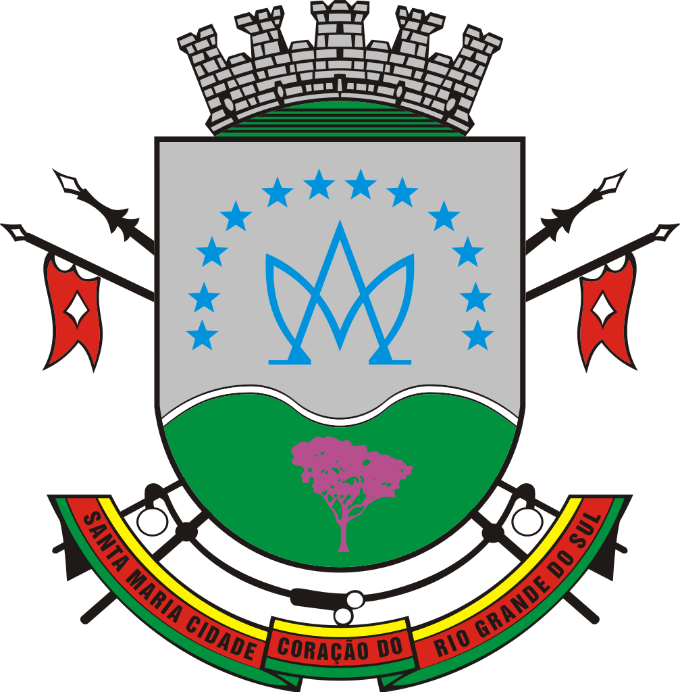

Referências
Gerais:
TRIPADVISOR: O que fazer em Santa Maria. [S. l.], 18 mar. 2020. Disponível em: https://www.tripadvisor.com.br/Attractions-g680301-Activities-Santa_Maria_State_of_Rio_Grande_do_Sul.html. Acesso em: 17 set. 2021.
GUIA do Turismo Brasil: Santa Maria - RS. [S. l.], 19 jun. 2019. Disponível em: https://www.guiadoturismobrasil.com/cidade/RS/719/santa-maria. Acesso em: 20 set. 2021.
UFSM: Santa Maria. [S. l.], 4 jul. 2018. Disponível em: https://www.ufsm.br/santa-maria/. Acesso em: 20 set. 2021.
WIKIPÉDIA: Santa Maria (Rio Grande do Sul). [S. l.], 7 set. 2021. Disponível em: https://pt.wikipedia.org/wiki/Santa_Maria_(Rio_Grande_do_Sul). Acesso em: 20 set. 2021.
CIDADE Brasil: Município de Santa Maria. [S. l.], 8 abr. 2021. Disponível em: https://www.cidade-brasil.com.br/municipio-santa-maria-rs.html. Acesso em: 20 set. 2021.
Imagens:
AGÊNCIA de desenvolvimento de Santa maria: Mapa. [S. l.], 28 fev. 2021. Disponível em: http://santamariaemdados.com.br/mapa/. Acesso em: 20 set. 2021.
MAPAS Blog: Mapas de Santa Maria. [S. l.], 9 ago. 2014. Disponível em: http://santamariaemdados.com.br/mapa/. Acesso em: 17 set. 2021.
UFSM: Vila Belga. [S. l.], 25 set. 2020. Disponível em: https://www.ufsm.br/cursos/graduacao/santa-maria/tecnologia-em-gestao-de-turismo/eventos/congresso-de-turismo-rural/maiquel-vila-belga. Acesso em: 17 set. 2021.
SHOPPING Royal. [S. l.], 17 set. 2021. Disponível em: http://www.royalplaza.com.br/shopping/. Acesso em: 17 set. 2021.